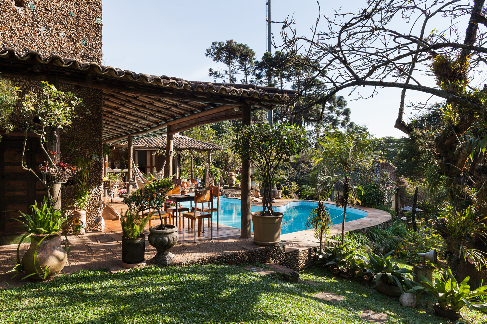
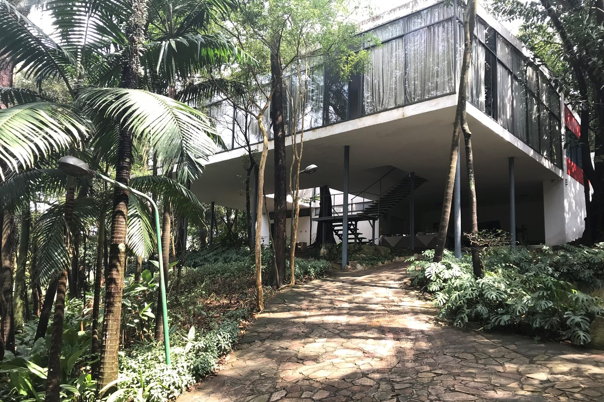
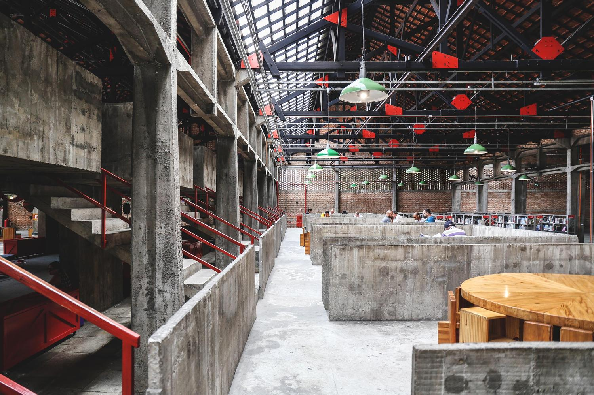
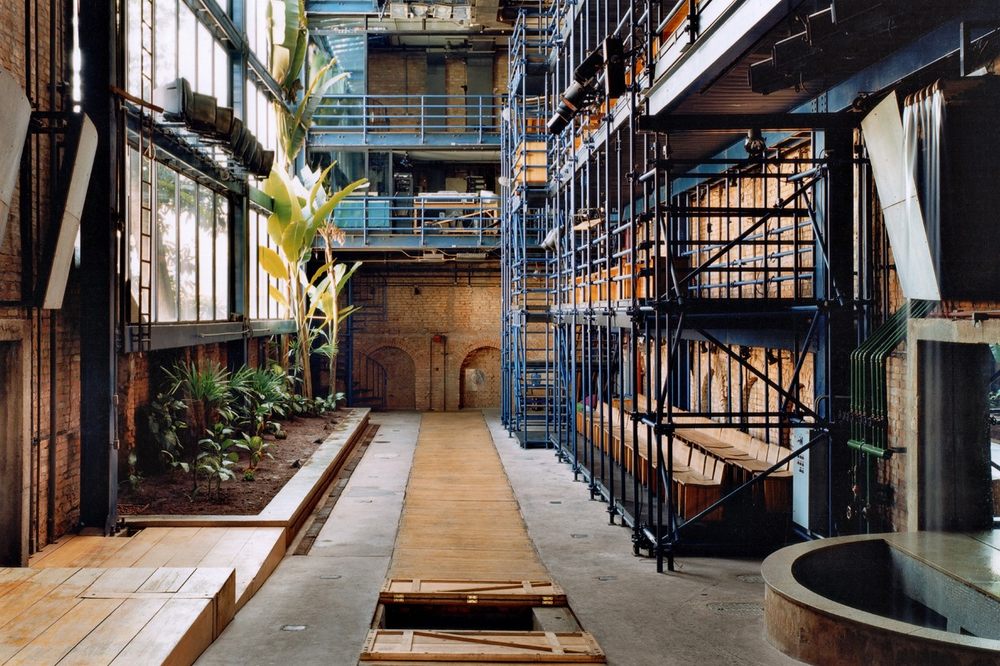
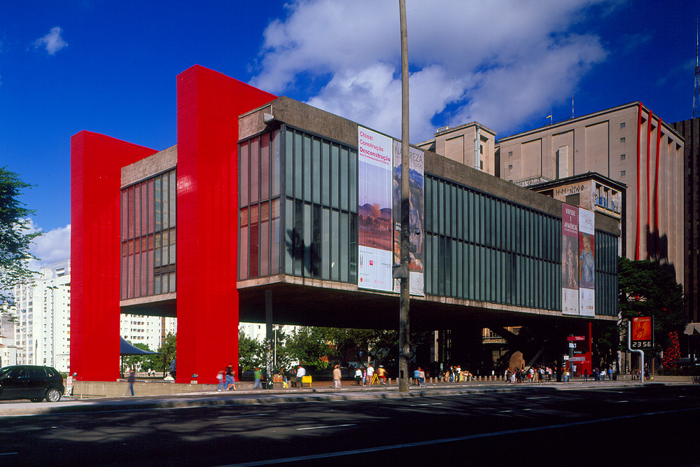

Lina Bo Bardi e sua escada helicoidal de madeira: tradição e modernidade.

Casa Valéria Cirell
O conjunto Cirell —casa e pavilhão— projetado por Lina Bo Bardi em 1964 é um experimento arquitetônico purista.

Casa de vidro
A estrutura vertical se compõe por esbeltos tubos de aço, dispostos em um modulação de quatro módulos de largura por cinco de profundidade..

SESC Pompeia
Três volumes prismáticos de concreto aparente surgem ao lado dos antigos galpões da fábrica de tambores da Pompéia.

Teatro Oficina
Teatro manifesto, marcado por grandes espetáculos entre expressões teatrais, apresentações de música, dança e performances.

MASP
O edifício foi projetado como um contêiner de arte, que armazena a cultura na zona onde se implanta. Uma arquitetura simples, que comunica de imediato aquilo que no passado foi chamado de monumental..